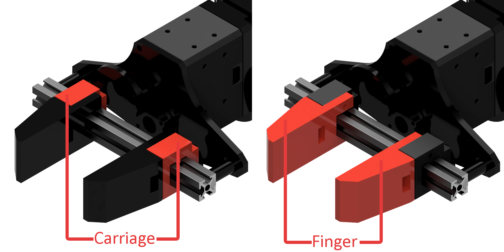
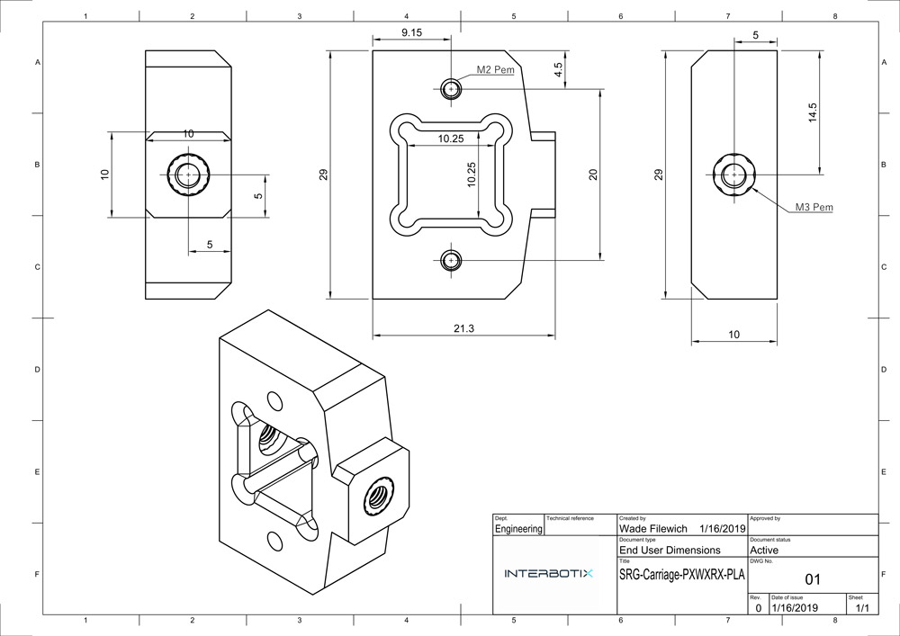

Customized Grippers
The grippers on all Interbotix Arms are made to be fully customizable by taking advantage of modern 3D printing. Users can create virtually any kind of gripper fingers they need for their use case and bolt them onto the gripper carriages.
Gripper Carriages are designed with several mounting points to make attaching custom fingers easy. Just use M2x14 bolts to secure your gripper fingers to the carriage.
